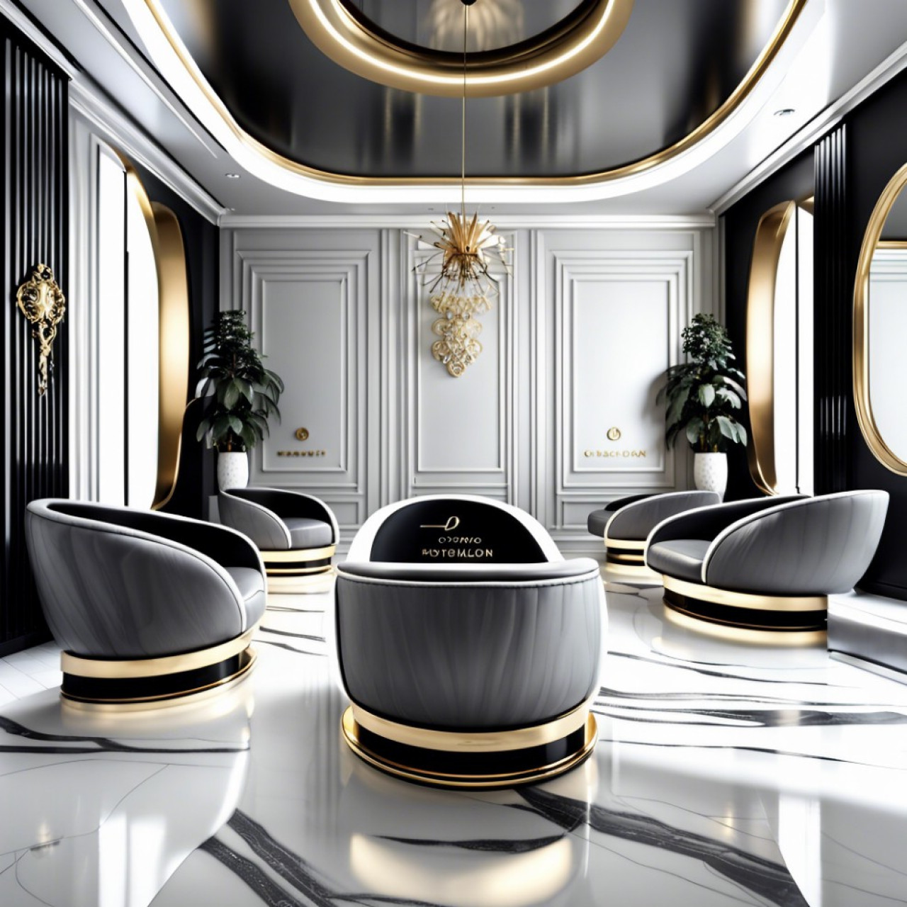

ჩვენს შესახებ

ვინ ვართ ჩვენ
კეთილი იყოს თქვენი მობრძანება Beauty Salon SV. ჩვენ ვართ წამყვანი სილამაზის ცენტრი, რომელიც გთავაზობთ მდიდრულ პროცედურებს, რომლებიც მორგებულია ბუნებრივი სილამაზისა და კეთილდღეობის გაუმჯობესებაზე. სალონი ორიენტირებულია მსოფლიო დონის მომსახურების მიწოდებაზე მშვიდ და ელეგანტურ გარემოში.
ჩვენი ხედვა
გავხდეთ ყველაზე სანდო სილამაზის ცენტრი ქალებისთვის, მუდმივად მაღალი ხარისხის მომსახურების მიწოდებით მდიდრულ და მისასალმებელ გარემოში.
ჩვენი მისია
შევთავაზოთ პერსონალიზებული სილამაზის მოვლა უახლესი ტენდენციებისა და პრემიუმ პროდუქტების გამოყენებით. გავაძლიეროთ ქალები მათი თავდაჯერებულობისა და თვით-მოვლის რიტუალების გაზრდით. შევინარჩუნოთ ჰიგიენის, პროფესიონალიზმისა და მომხმარებელთა კმაყოფილების უმაღლესი სტანდარტები.
ჩვენი გუნდი
ჩვენი გუნდი შედგება გამოცდილი, სერტიფიცირებული სილამაზის პროფესიონალებისგან, რომლებიც მუდმივად ეცნობიან კანის მოვლის, თმის ვარცხნილობისა და მაკიაჟის უახლეს ტექნიკას. ჩვენ ვამაყობთ, რომ გვყავს სპეციალისტები, რომლებსაც ესმით ქალების უნიკალური სილამაზის პრეფერენციები.
რატომ უნდა აგვირჩიოთ ჩვენ?
- 5-ვარსკვლავიანი კლიენტების შეფასებები და განმეორებითი მომხმარებლები
- მორგებული მომსახურება ყველა ტიპისა და სტილის კანისთვის
- მაღალი დონის საერთაშორისო სილამაზის ბრენდების გამოყენება
- რეგულარული სილამაზის კამპანიები, ფასდაკლებები და ლოიალობის პროგრამები